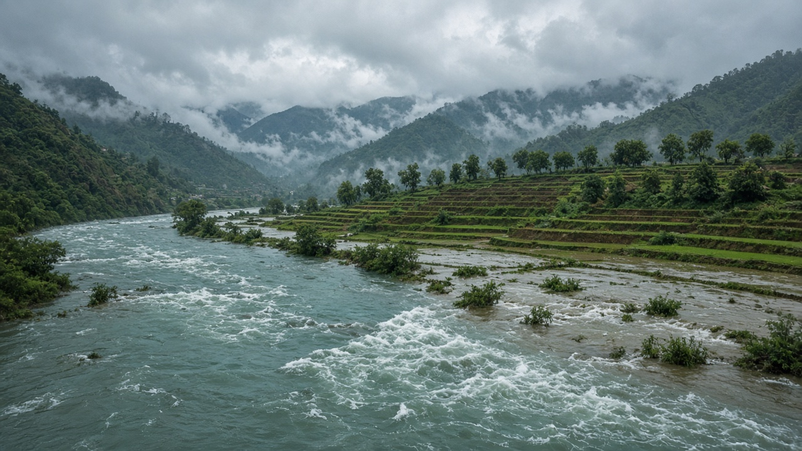
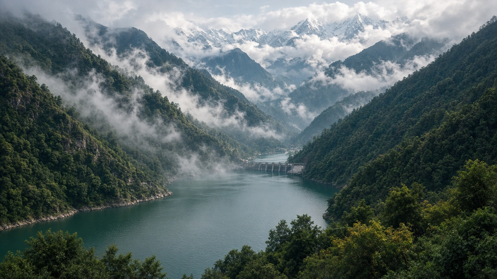

Paris Agreement & International Climate Policy
Published on July 7, 2026
The Paris Agreement, adopted in 2015 under the United Nations Framework Convention on Climate Change, represents the most inclusive global pact to address climate change. Nearly every country became a party, committing to hold the increase in global average temperature well below 2 degrees Celsius above pre-industrial levels and to pursue efforts to limit warming to 1.5 degrees. Unlike earlier top-down treaties that imposed identical targets, Paris relies on nationally determined contributions—each country's self-defined plans for reducing emissions and adapting to impacts, updated on a regular cycle to reflect increasing ambition over time.
International climate policy under Paris includes mechanisms for transparency, global stocktakes that assess collective progress, and frameworks for climate finance to support developing nations. Finance remains a contentious but central pillar, as countries with historically low emissions often face disproportionate vulnerability to droughts, floods, and glacier melt. Loss and damage discussions address impacts that cannot be adapted to, such as displacement from sea-level rise or irreversible ecosystem shifts. Diplomatic negotiations at Conferences of the Parties continue to refine rules on carbon markets, reporting standards, and support for just transitions away from fossil fuels.
For countries like Nepal, the Paris framework aligns with national priorities on renewable energy, forest conservation, and disaster risk reduction while highlighting the need for international support to implement ambitious plans. Effective implementation depends on domestic laws, local governance, and public participation—not only on diplomatic signatures. Businesses, cities, and civil society also play growing roles through net-zero pledges and climate action coalitions. The Paris Agreement does not solve climate change by itself, but it provides a durable architecture for cooperation, accountability, and rising ambition in the face of a shared planetary challenge.

जलवायु परिवर्तनसम्बन्धी संयुक्त राष्ट्रसंघीय रामवाचा अन्तर्गत २०१५ मा अपनाइएको पेरिस सम्झौता जलवायु परिवर्तन सम्बोधन गर्ने सबैभन्दा समावेशी विश्वव्यापी सम्झौता हो। लगभग हरेक देश पक्ष बन्यो, औद्योगिक पूर्व स्तरभन्दा विश्वव्यापी औसत तापक्रम वृद्धि २ डिग्री सेल्सियसभन्दा धेरै तल राख्न र १.५ डिग्रीमा सीमित गर्न प्रयास गर्ने प्रतिबद्धता जनाए। पहिलेका एकरूप लक्ष्य लगाउने शीर्ष–तलबाट निर्देशित सम्झौताहरूको विपरीत, पेरिसले राष्ट्रिय रूपमा निर्धारित योगदानमा भर पर्छ—प्रत्येक देशको उत्सर्जन घटाउने र प्रभावहरूमा अनुकूलन गर्ने आ–फै निर्धारित योजना, जुन नियमित चक्रमा समयसँगै बढ्दो महत्वाकांक्षा प्रतिबिम्बित गर्न अद्यावधिक हुन्छ।
पेरिस अन्तर्गतको अन्तर्राष्ट्रिय जलवायु नीतिमा पारदर्शिताका संयन्त्रहरू, सामूहिक प्रगति मूल्याङ्कन गर्ने विश्वव्यापी स्टकटेक, र विकासशील राष्ट्रहरूलाई सहयोग गर्न जलवायु वित्तका ढाँचाहरू समावेश छन्। ऐतिहासिक रूपमा कम उत्सर्जन भएका देशहरूले प्रायः सुख्खा, बाढी र हिमनदी पग्लने प्रति असमानुपातिक असुरक्षा सामना गर्ने भएकाले वित्त विवादास्पद तर केन्द्रीय स्तम्भ बनेको छ। हानि र क्षति सम्बन्धी छलफलले समुद्र सतह बढ्दा विस्थापन वा अपरिवर्तनीय पारिस्थितिकी परिवर्तन जस्ता अनुकूलन गर्न नसकिने प्रभावहरू सम्बोधन गर्छ। पक्ष सम्मेलनहरूमा कूटनीतिक वार्ताले कार्बन बजार, प्रतिवेदन मापदण्ड र जीवाश्म इन्धनबाट न्यायपूर्ण संक्रमणका लागि समर्थन सम्बन्धी नियमहरू परिष्कृत गर्न जारी राखेका छन्।
नेपाल जस्ता देशहरूका लागि पेरिस ढाँचाले नवीकरणीय ऊर्जा, वन संरक्षण र विपद् जोखिम न्यूनीकरणमा राष्ट्रिय प्राथमिकतासँग मेल खान्छ भने महत्वाकांक्षी योजना कार्यान्वयन गर्न अन्तर्राष्ट्रिय सहयोगको आवश्यकता पनि उजागर गर्छ। प्रभावकारी कार्यान्वयन कूटनीतिक हस्ताक्षर मात्र होइन, घरेलु कानून, स्थानीय शासन र जनसहभागितामा निर्भर गर्छ। व्यवसाय, सहर र नागरिक समाजले नेट–जीरो प्रतिबद्धता र जलवायु कार्य गठबन्धनमार्फत पनि बढ्दो भूमिका खेलिरहेका छन्। पेरिस सम्झौताले आफैंले जलवायु परिवर्तन समाधान गर्दैन, तर साझा ग्रहगत चुनौतीको सामना गर्दा सहकार्य, जवाफदेहिता र बढ्दो महत्वाकांक्षाका लागि दिगो संरचना प्रदान गर्छ।

जलवायु परिवर्तन पर संयुक्त राष्ट्र ढांचा सम्मेलन के तहत 2015 में अपनाया गया पेरिस समझौता जलवायु परिवर्तन से निपटने का सबसे समावेशी वैश्विक समझौता है। लगभग हर देश इसका पक्ष बना, औद्योगिक पूर्व स्तर से वैश्विक औसत तापमान वृद्धि को 2 डिग्री सेल्सियस से काफी नीचे रखने और 1.5 डिग्री तक सीमित करने का प्रयास करने की प्रतिबद्धता जताई। समान लक्ष्य लगाने वाले पहले के ऊपर से निर्देशित समझौतों के विपरीत, पेरिस राष्ट्रीय रूप से निर्धारित योगदान पर निर्भर करता है—प्रत्येक देश की उत्सर्जन कम करने और प्रभावों के अनुकूलन की स्व–निर्धारित योजनाएं, जो नियमित चक्र में समय के साथ बढ़ती महत्वाकांक्षा को दर्शाने के लिए अद्यतन होती हैं।
पेरिस के तहत अंतरराष्ट्रीय जलवायु नीति में पारदर्शिता के तंत्र, सामूहिक प्रगति का आकलन करने वाले वैश्विक स्टॉकटेक, और विकासशील देशों को समर्थन देने के लिए जलवायु वित्त के ढांचे शामिल हैं। वित्त विवादास्पद लेकिन केंद्रीय स्तंभ बना हुआ है, क्योंकि ऐतिहासिक रूप से कम उत्सर्जन वाले देश अक्सर सूखा, बाढ़ और हिमनदी पिघलने के प्रति असमानुपातिक कमजोरी का सामना करते हैं। हानि और क्षति की चर्चाएं उन प्रभावों को संबोधित करती हैं जिन्हें अनुकूलित नहीं किया जा सकता, जैसे समुद्र स्तर बढ़ने से विस्थापन या अपरिवर्तनीय पारिस्थितिकी परिवर्तन। पक्ष सम्मेलनों में कूटनीतिक वार्ता कार्बन बाजार, रिपोर्टिंग मानकों और जीवाश्म ईंधन से न्यायपूर्ण संक्रमण के समर्थन पर नियमों को परिष्कृत करना जारी रखती है।
नेपाल जैसे देशों के लिए पेरिस ढांचा नवीकरणीय ऊर्जा, वन संरक्षण और आपदा जोखिम कमीकरण की राष्ट्रीय प्राथमिकताओं के साथ मेल खाता है, साथ ही महत्वाकांक्षी योजनाओं को लागू करने के लिए अंतरराष्ट्रीय समर्थन की आवश्यकता को भी उजागर करता है। प्रभावी कार्यान्वयन केवल कूटनीतिक हस्ताक्षरों पर नहीं, बल्कि घरेलू कानूनों, स्थानीय शासन और जन भागीदारी पर निर्भर करता है। व्यवसाय, शहर और नागरिक समाज भी नेट–ज़ीरो प्रतिबद्धताओं और जलवायु कार्य गठबंधनों के माध्यम से बढ़ती भूमिका निभाते हैं। पेरिस समझौता अपने आप जलवायु परिवर्तन का समाधान नहीं करता, लेकिन साझा ग्रहगत चुनौती के सामने सहयोग, जवाबदेही और बढ़ती महत्वाकांक्षा के लिए स्थायी संरचना प्रदान करता है।